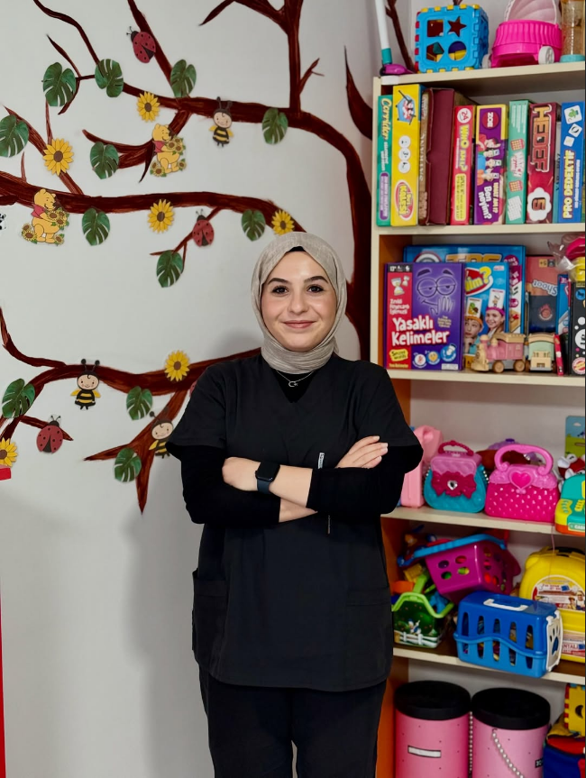
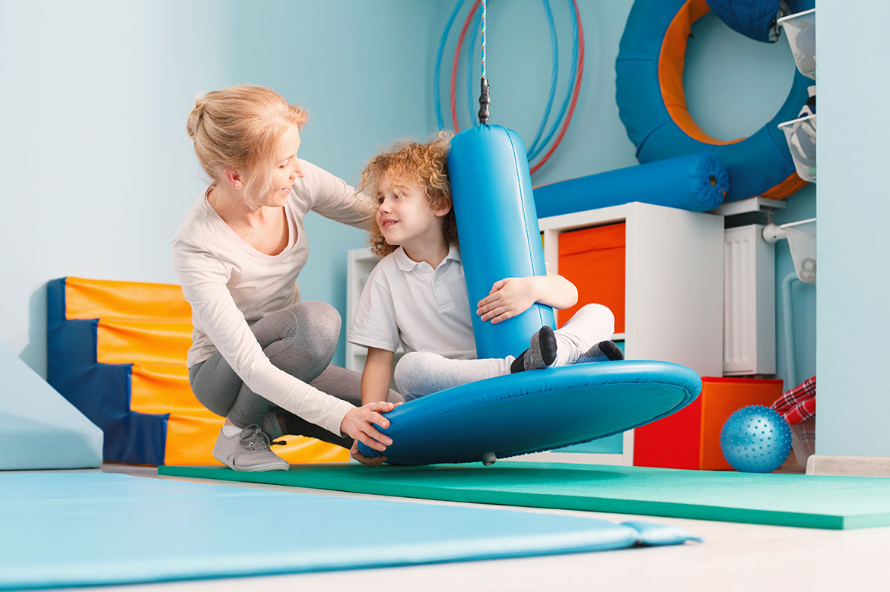
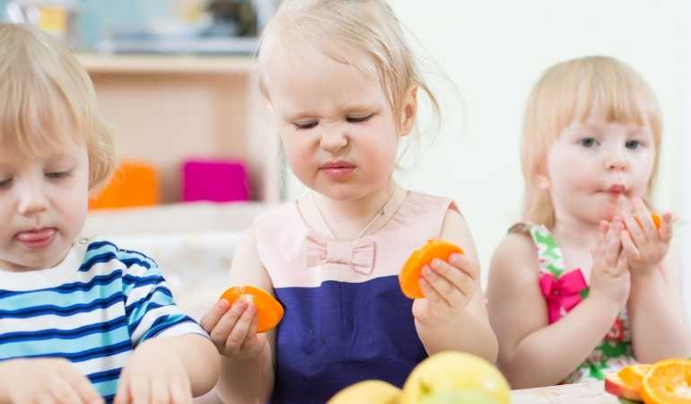
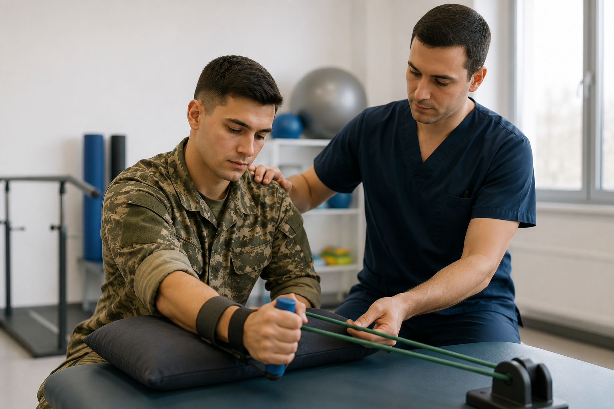
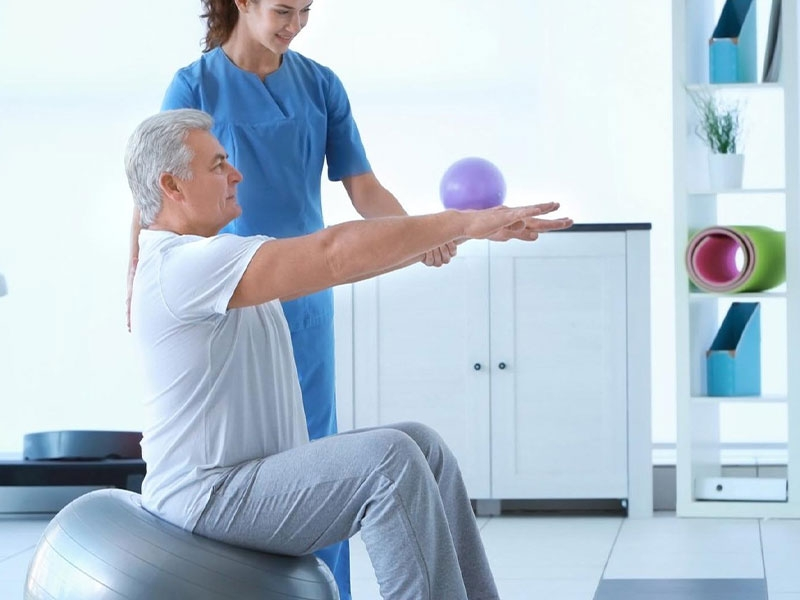
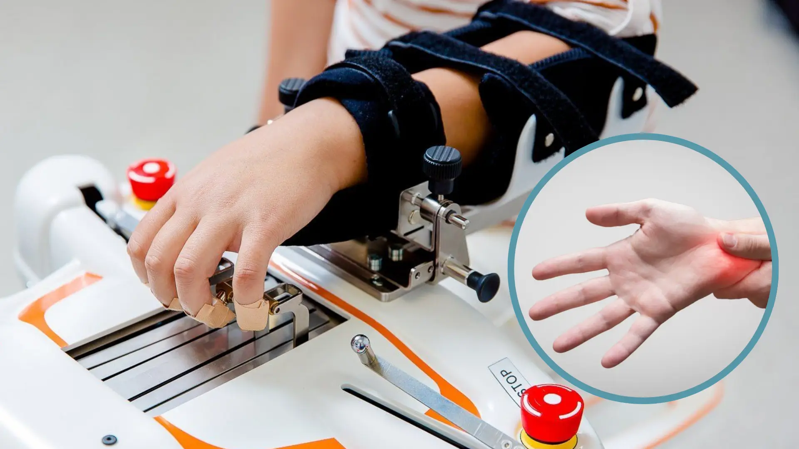

Evidence-based and person-centered occupational therapy services that support individuals' meaningful participation in activities of daily living.

Specialist Occupational Therapist Hazal Pural is a healthcare professional dedicated to maximizing individuals' potentials and achieving full independence in daily life. Adopting a holistic perspective embracing the core principles of occupational therapy science, she evaluates the physical, sensory, and psychological needs of every client.
After successfully completing her undergraduate and specialization education; she has conducted comprehensive clinical studies in specific areas such as pediatric development, sensory integration therapy, eating disorders (SOS Feeding Therapy), and neurological and psychiatric rehabilitation. She not only supports children's motor and cognitive development but also guides families to be the strongest supporters in this process.
For Hazal Pural, therapy is not just an intervention process; it is about the individual participating meaningfully in their own life again and regaining the belief of "I can do it". She has dedicated her professional life to offering modern, evidence-based methods with love, empathy, and unconditional acceptance.
For our detailed treatment approaches, you can review our specialties below ↓
Increases children's independence by supporting their motor, sensory, and cognitive skills.
View Details →
Ensures sensory information from the environment and body is correctly processed by the brain.
View Details →
Therapy involving sensory approaches for individuals with food refusal and feeding difficulties.
View Details →
Supports the physical or post-rehabilitation adaptation of military personnel.
View Details →
Regaining daily skills lost after stroke, MS, or spinal cord injuries.
View Details →Participation of individuals experiencing mental health challenges in social life and meaningful activities.
View Details →
Restoration of functions after upper extremity (hand, wrist, arm) injuries and surgeries.
View Details →Occupational therapy sessions generally last a total of 60 minutes, including standard 45-50 minutes of practice and 5-10 minutes of family briefing. Session frequency is determined by the specialist as 1, 2, or more sessions per week depending on the child's needs and development chart after a detailed assessment.
Direct intervention does not start in the first session; the child's motor, sensory, cognitive, and daily living skills are evaluated in detail with standard tests and clinical observations. At the same time, developmental history is taken from the family. At the end of the evaluation, the child's strengths and areas needing support are determined, and a personalized therapy plan is created with the family.
Occupational therapy is a broad main discipline aiming for the individual's full independence in daily life activities. Sensory Integration Therapy, on the other hand, is a specific and evidence-based intervention method focusing on regulating the nervous system, frequently used by occupational therapists in the pediatric population (especially in sensory processing disorders).
Yes, the biggest key to success in occupational therapy is family involvement. Detailed feedback is given to the family at the end of each session so that the work in the session room can be continued in home, school, and social life environments. The permanence of the process is ensured through "Sensory Diets" and home programs prepared for the child's sensory and developmental needs.